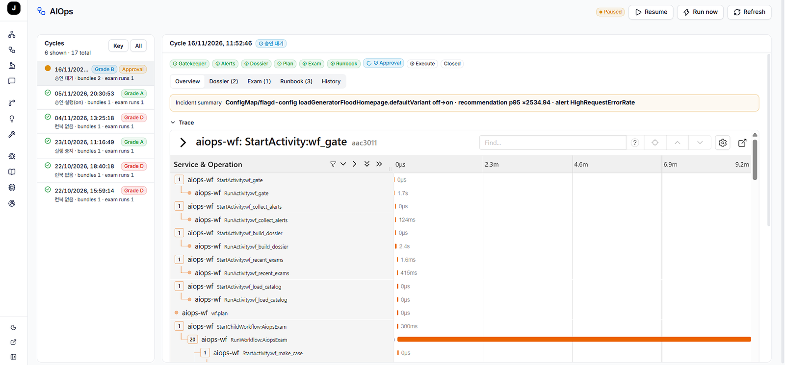
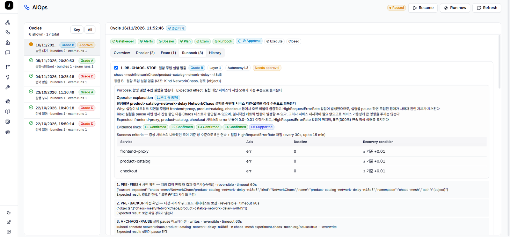
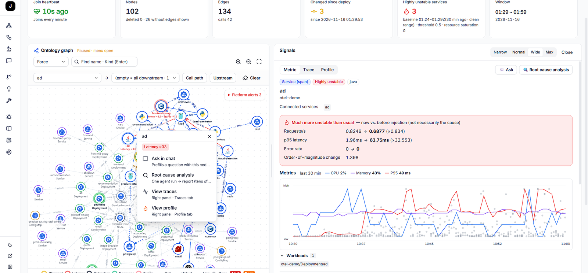
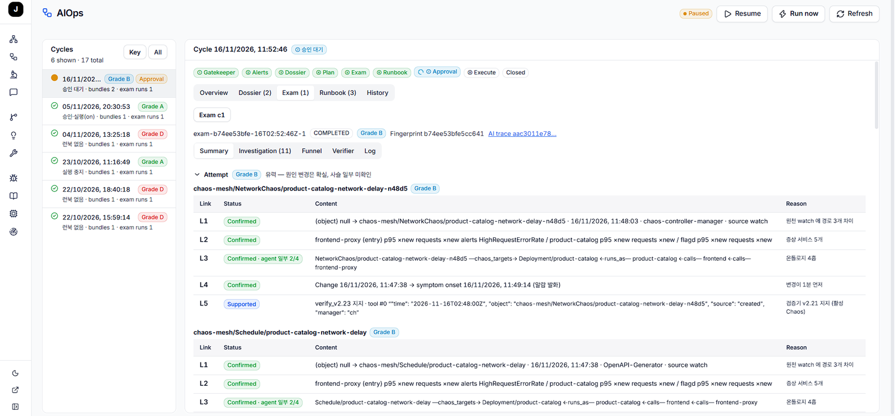

1. 왜 "자율 운영"인가
지금까지의 운영 도구는 대부분 사람을 보조하는 데 머물렀다. 대시보드가 그래프를 보여 주고, 알림이 울리고, 챗봇이 질문에 답한다. 하지만 무엇이 문제인지 알아차리고, 왜 그런지 분석하고, 어떻게 고칠지 결정하는 일은 여전히 사람의 몫이었다.
진짜 자율 운영은 다르다. 사용자가 상황을 일일이 설명해 주지 않아도, AI가 스스로 문제를 탐색하고(detect) · 식별하고(identify) · 원인을 분석하고(diagnose) · 해결책을 실행(remediate)할 수 있어야 한다.
- 운영자가 "A 서비스 지연이 심한데 원인 좀 찾아줘"라고 물어보는 것은 편리하지만, 이것은 자율 운영이 아니다. 사람이 이미 문제를 인지하고, 문맥을 제공하고 있기 때문이다.
- 자율 운영은 아무도 물어보지 않았을 때 AI가 먼저 이상을 감지하고, 스스로 조치까지 이어 가는 것이다.
2. 자동차로 이해하기 — 크루즈 컨트롤 vs 완전 자율 주행
운영 방식의 차이는 자동차에 비유하면 쉽게 와닿는다.
| 운전 방식 | 설명 | 운영에 대응 |
|---|---|---|
| 크루즈 컨트롤 | 운전자가 운전대를 잡은 채, 차가 속도 유지 등 일부를 도와줌. 편하지만 운전의 주체는 사람. | 직접 운영 — 운영자가 판단하고, AI가 거든다 |
| 완전 자율 주행 | 운전자의 간섭 없이 차가 스스로 길을 찾아 운전. | 자율 운영 — AI가 스스로 문제를 찾아 고친다 |
핵심은 둘 중 하나만 고르는 것이 아니라는 점이다. 상황에 따라 두 방식을 오갈 수 있어야 한다. 복잡한 시내 주행은 사람이, 한산한 고속도로는 자율 주행이 맡는 것처럼 — 운영도 상황에 맞게 전환할 수 있어야 한다.




3. 출근하면 직접 운영, 퇴근하면 자율 운영
JuneAI의 두 방식은 시간과 상황에 따라 전환된다.
- 운영자가 출근해 있을 때 → 직접 운영
사람이 대시보드를 보며 판단하고, AI 챗봇과 이상탐지가 이를 돕는다. 중요한 의사결정은 사람이 내린다. - 운영자가 퇴근한 뒤(야간·휴일) → 자율 운영
사람이 없는 시간에는 AI가 온톨로지와 에이전트를 통해 스스로 장애를 감지하고, 원인을 분석하고, 조치를 실행한다.
이렇게 하나의 플랫폼이 "사람 중심 모드"와 "AI 중심 모드"를 모두 품는 것이 JuneAI의 지향점이다.
4. 두 운영 방식의 비교
| 구분 | 🤖 자율 운영 (Autonomous) | 👤 직접 운영 (Assisted) |
|---|---|---|
| 주체 | AI가 스스로 판단·실행 | 사람이 판단, AI가 보조 |
| 사람 개입 | 최소 (무인 운영 가능) | 필수 |
| 핵심 기술 | 온톨로지 + 에이전트 | 이상탐지 + 챗봇 |
| 비용 구조 | AI 토큰 사용료 | 인력 교육·운영 인건비 |
| 강점 | 24시간 무인 대응, 일관성, 확장성 | 사람의 직관·맥락 판단, 예외 대응 |
| 과제 | 안정화·최적화 필요 | 자동화가 어렵고 사람에 의존 |
두 방식은 경쟁 관계가 아니라 보완 관계이다. 직접 운영은 사람의 경험과 직관을 살리고, 자율 운영은 사람이 없는 시간과 반복 업무를 메운다.
5. 자율 운영은 왜 "온톨로지와 에이전트"를 쓰는가
자율 운영의 핵심 기술은 온톨로지(Ontology)와 에이전트(Agent)이다.
온톨로지 — AI가 이해하는 "운영의 지도"
온톨로지는 시스템의 구성 요소(서비스·장비·회선·고객·주문 등)와 그들 사이의 관계를, AI가 읽고 추론할 수 있는 구조로 정리한 지식 체계이다.
- 사람이 매번 "이 서비스는 저 장비에 연결돼 있어"라고 설명하지 않아도, AI가 관계를 따라가며 원인의 뿌리를 스스로 추적할 수 있다.
- "증상이 나타난 지점"에서 "실제 원인 지점"까지 연결선을 타고 내려가는 것이 가능해진다.

에이전트 — 스스로 움직이는 "운영자 역할의 AI"
에이전트는 온톨로지라는 지도를 보며, 탐색 → 분석 → 조치의 과정을 사람 없이 수행하는 실행 주체이다.
비용과 과제: 자율 운영은 AI(LLM)가 추론하는 과정에서 토큰을 사용하므로 그만큼 AI 사용 비용이 발생한다. 또한 실제 운영 현장에 안착하려면 지속적인 안정화와 최적화가 필요하다.

6. 직접 운영은 왜 "이상탐지와 챗봇"을 쓰는가
직접 운영은 사람이 주체이고, AI는 그 판단을 돕는다.
- 이상탐지(Anomaly Detection) — 평소와 다른 패턴을 자동으로 찾아 사람에게 "여기 좀 보세요"라고 알려 준다.
- 챗봇(Chatbot) — 운영자가 궁금한 것을 물으면, 쌓인 데이터와 지식을 근거로 답해 준다.

이 방식은 사람의 맥락 이해와 직관을 최대한 살린다. 다만 다음과 같은 한계가 있다.
비용과 과제: 직접 운영은 사람의 개입을 전제로 하므로 운영 인력을 교육하는 비용이 들고, 사람에 대한 의존 때문에 완전한 자동화가 어렵다.
7. 자율 운영을 가로막는 걸림돌 — "정리되지 않은 지식"
AI에게 과거의 노하우를 문서(예: .md 파일)로 제공하는 것은 유용하다. 사람이 겪은 경험을 메모리에 저장해 두고 필요할 때 다시 꺼내 쓰는 방식은, 특히 직접 운영에서 큰 힘을 발휘한다.
하지만 여기에는 깊이 고민해야 할 지점이 있다.
(1) 정리되지 않은 자료는 정확도를 떨어뜨린다
완결되지 않고 정리되지 않은 내부 자료와 문서는, 오히려 AI의 정확도를 떨어뜨리는 주요 원인이다. 낡거나 모순되거나 반쪽짜리인 지식은 잘못된 판단으로 이어진다. 지식은 "많이 쌓는 것"보다 "정리되고 신뢰할 수 있게 유지되는 것"이 중요하다.
(2) 과거의 노하우가 창의적 사고를 제한하지 않는가
과거의 경험을 문서로 고정해 주입하는 것이, 자칫 AI의 자율적이고 창의적인 문제 해결을 특정 틀에 가둘 수 있다. "예전엔 이렇게 했다"는 기록이, 더 나은 새로운 해법을 가로막을 수 있다는 것이다. 그래서 자율 운영에서는 지식을 참고하되, 스스로 탐색하고 추론할 여지를 함께 남겨 두어야 한다.
(3) MCP는 유용하지만, 그 자체로 자율 운영은 아니다
API나 SQL을 호출하기 위해 MCP(Model Context Protocol) 같은 방식으로 도구를 연결하는 것은 매우 유용하다. 하지만 MCP는 "AI가 도구를 쓸 수 있게 연결해 주는 통로"일 뿐, 그 자체가 자율 운영과 자율 치유(self-healing)를 보장하지는 않는다. 도구를 쥐여 주는 것과, 스스로 판단해 그 도구를 적재적소에 쓰는 것은 다른 차원의 문제이기 때문이다.
8. 정리 — JuneAI가 그리는 운영의 미래
- 두 개의 모드, 하나의 플랫폼 — 사람이 주도하는 직접 운영과 AI가 주도하는 자율 운영을, 상황에 따라 자유롭게 전환한다.
- 낮엔 사람, 밤엔 AI — 운영자의 출퇴근에 맞춰 운영 주체가 바뀐다.
- 자율 운영의 엔진은 온톨로지와 에이전트 — AI가 운영의 지도를 읽고 스스로 움직인다.
- 직접 운영의 조력자는 이상탐지와 챗봇 — 사람의 판단을 데이터로 뒷받침한다.
- 신뢰할 수 있는 지식이 핵심 — 정리되지 않은 자료는 치우고, AI가 스스로 사고할 여지를 남긴다.
JuneAI는 사람의 손을 덜어 주는 크루즈 컨트롤이자, 필요할 때는 운전대를 넘겨받는 완전 자율 주행이다.